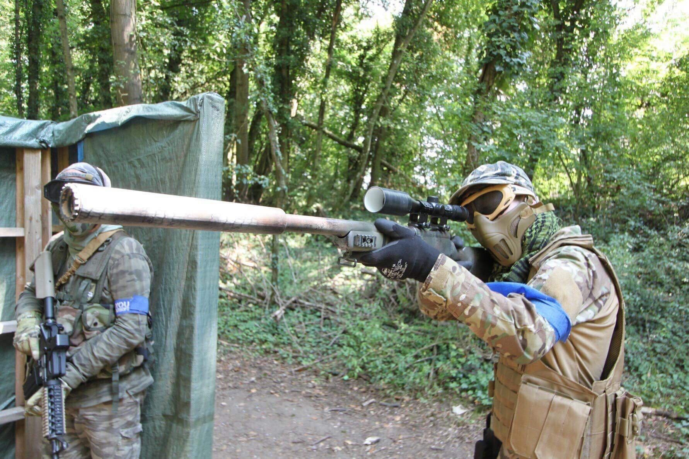

Arthur VIETTI
Arthur VIETTI
 07.67.43.51.20
07.67.43.51.20

Airsoft
L'airsoft qu'est-ce que c'est ?
C'est un sport dans lequel on utilise des répliques d'armes permettant de tirer des billes de 6mm avec une puissance inférieur à 2 joules (législation française)
Le but étant principalement de jouer en équipe et d'atteindre son objectif, cela peut être une prise de bâtiment pour sauver un otage, désamorcer une bombe (factice je précise) ou tout simplement une capture de drapeau.
On peut pratiquer ce sport uniquement pour s'amuser et tirer de la bille ou bien aller plus loin et entrer la catégorie milsim qui correspond à la simulation militaire avec contact radio, quartier général, grenade tactique, etc ...